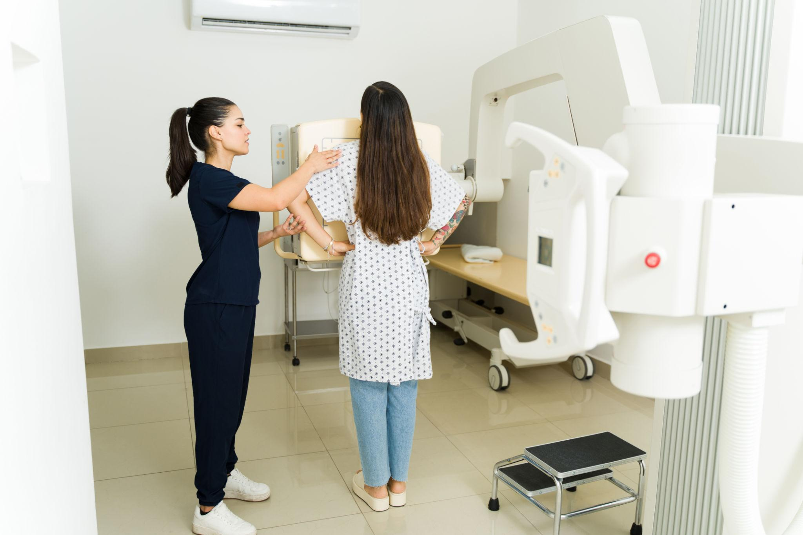
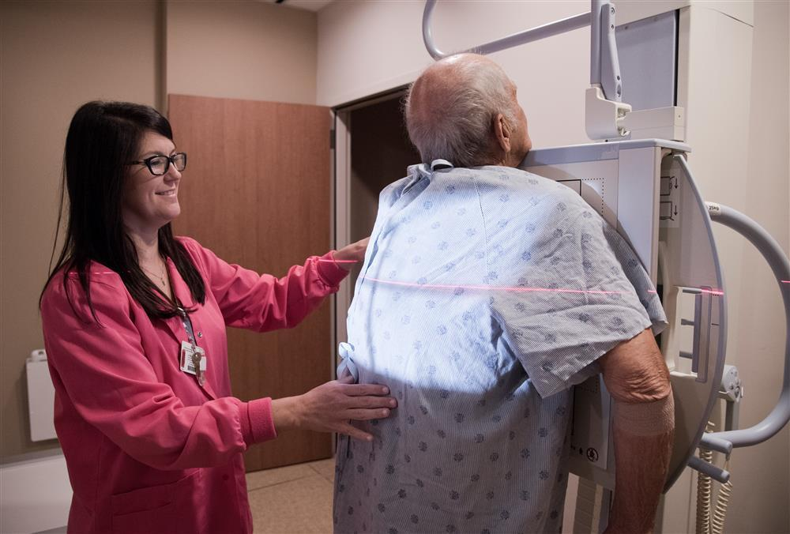
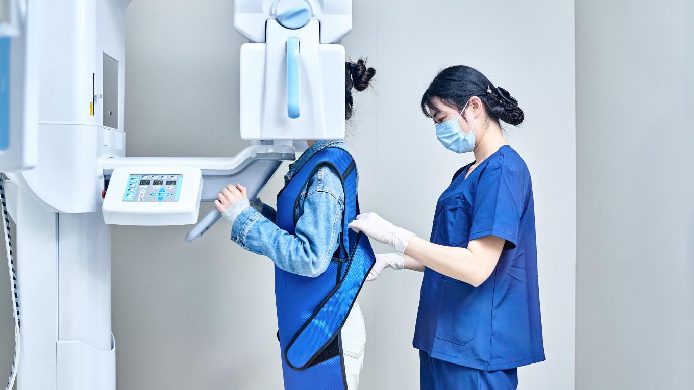

Direct Digital X-Ray Services
High-frequency digital radiography offering ultra-low ionizing dose, instantaneous flat-panel detector capture, and sub-millimeter anatomical detail interpreted by certified radiologists.
Ultra-Low Dose. Uncompromising Diagnostic Clarity.
Our state-of-the-art Direct Radiography (DR) suite eliminates antiquated chemical film processing in favor of high-sensitivity cesium iodide (CsI) wireless detectors.
This results in up to 70% reduction in patient radiation dose while producing instantaneous, ultra-high-resolution DICOM images with dynamic contrast tuning for bone cortex and soft tissue discrimination.
- Pediatric-calibrated low-kVp exposure settings
- Dual-energy bone and soft-tissue subtraction capabilities
- Fully motorized ceiling-suspended tube crane for trauma patient comfort
Specialized Radiographic Examinations
Comprehensive diagnostic coverage from standard standing chest screens to complex maxillofacial studies.



What to Expect During Your X-Ray
A seamless, comfortable, and completely painless 15-minute diagnostic journey.
Registration & Metal Removal
Check in with your prescription. Change into a fresh cotton gown and remove jewelry, belts, and metal accessories.
Lead Shielding & Positioning
Our certified radiographer positions you against the flat-panel detector and places targeted lead shielding.
Instantaneous Digital Exposure
You hold your breath for 1 to 2 seconds while the high-frequency generator captures the exposure instantaneously.
Immediate Radiologist Sign-Off
Images are transmitted to PACS for radiologist interpretation. Collect your dry thermal film and digital link in 45 minutes.
Safe, Low-Dose X-Ray Standards
Direct digital cesium iodide detectors enable clinical imaging with radiation fractions far below regulatory limits.
Equivalent to ~3 days of natural background radiation exposure. Zero accumulated risk.
Near-negligible exposure equivalent to less than 3 hours of natural background living.
Targeted cone collimation restricts radiation strictly to the vertebral bodies.
Continuous slit-beam rotation with thyroid lead collar protection.
Patient Positioning & Breath-Hold Guides
Proper patient posture and respiratory suspension ensure razor-sharp diagnostic images on the first exposure.
PA Chest (Deep Inspiration)
Stand facing the flat panel with hands on hips and shoulders rolled forward. Inhale deeply and hold for 2 seconds to expand lung fields.
Cervical & Lumbar Spine
Upright standing or supine table postures with lateral flexion guides to evaluate intervertebral disc spacing and lordosis alignment.
Extremity Trauma & Oblique
Foam wedges gently support joint flexion at precise 45-degree angles to evaluate subtle hairline fractures and articular facets.
Dental Panoramic (OPG)
Stand upright with chin resting on the sterile support peg and bite gently on the disposable guide. Hold still for 12 seconds during rotation.